| lemma | avadāna | dhāraṇī | lit | sādhana | śāstra | stotra | sūtra | tantra | vinaya |
|---|---|---|---|---|---|---|---|---|---|
| nāman | 15 | 0 | 16 | 0 | 871 | 2 | 1,597 | 87 | 40 |
| pada | 30 | 60 | 39 | 3 | 1,935 | 20 | 743 | 222 | 29 |
| ruta | 3 | 0 | 4 | 0 | 32 | 1 | 29 | 19 | 1 |
| śabda | 75 | 1 | 12 | 0 | 6,126 | 1 | 251 | 63 | 14 |
| saṃjñā | 75 | 0 | 33 | 0 | 417 | 9 | 198 | 10 | 42 |
| saṃketa | 0 | 0 | 0 | 0 | 5 | 0 | 110 | 1 | 0 |
| vacana | 2 | 0 | 0 | 1 | 173 | 0 | 7 | 4 | 0 |
1 Language
Language is a complex conceptual domain in Sanskrit, as it is testified by the rich array of words that lexicalize it in our corpus, each pointing to a slightly different facet of it. We cover here seven main aspects of Language that are lexicalized in our corpus, language as vocabulary, as naming, as sound, as literal, as conceptualization, as construct and non-verbal language. This is no way meant to exhaust all the dimensions of the concept of Language (notable exclusions include meaning and synonymy, expressed by words like artha, abhidheya, adhivacana and paryāya, we may add these in the future), but it constitutes a starting point for the exploration of how this concept is lexically articulated across various layers of our corpus.
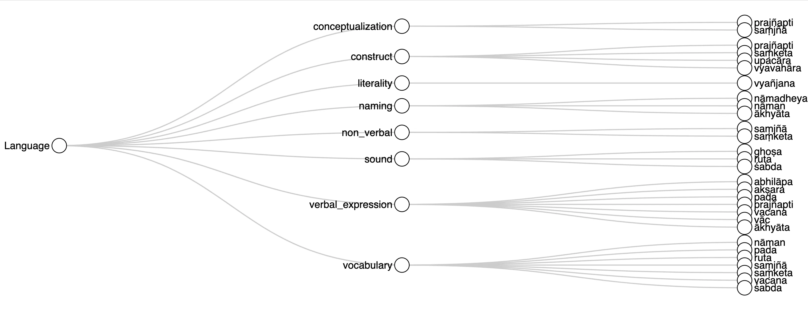
Overall, the vocabulary used to express the various aspects of Language discussed here remains stable across periods and genres, with the lexical fields expressing the core themes of language as a set of words and language as verbal expression consistently constituting the most prominent share of the lexicon devoted to this conceptual domain. Still, there are some notable shifts, especially in the closely connected areas of language as construct and language as conceptualization, with the former increasing over time and the other one waning. A closer look at the relevant section below (Section 1.5) will reveal that this is due to a shift from an emphasis on language as conceptual construct devoid of ontological foundation, typical of sūtras and early treatises, to a depiction of language as a social construct that functions through agreed conventions of speech, prominent in later philosophical texts, especially from the pramāṇa tradition. Another notable, diachronic change is the sharp decline in the use of nāmadheya, a word strongly associated with early sūtras and prajñāpāramitā discourse (see Section 1.2). There are also some noticeable differences in lexical distribution across genres. Most notably śāstras display a strong preference for śabda among the vocabulary used to convey the idea of ‘word’; and the use of prajñapti in the field of ‘verbal expression’, where it takes the sense of ‘exposition’, is closely connected with vinaya literature.
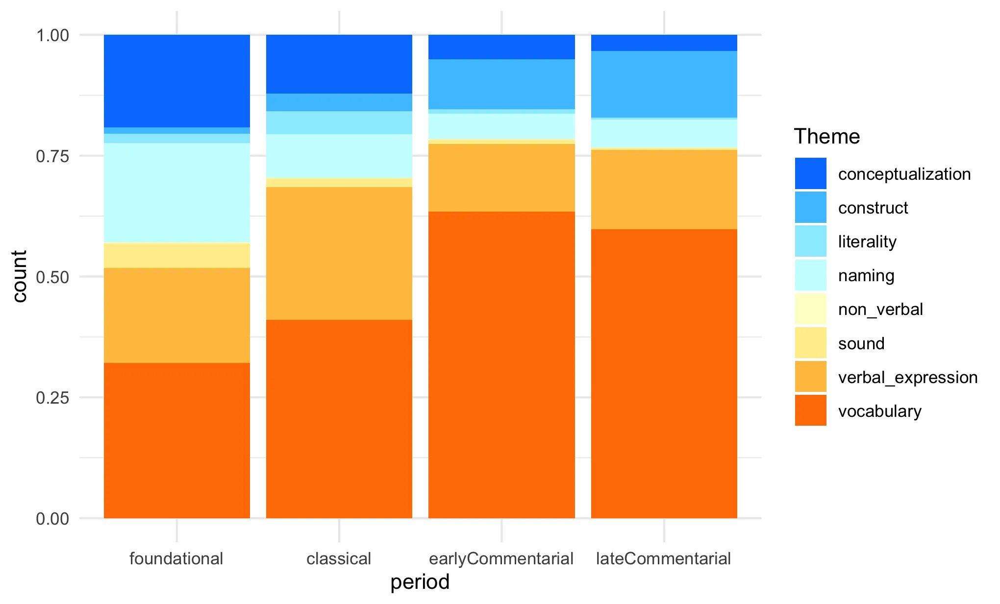

:::
1.1 Language as vocabulary
The very amount of vocables used to express the idea of “word” attests to the many nuances that verbal communication takes on in Sanskrit Buddhist literature. Nāman, which perhaps is closest to the English “word” points to the generic ability of language to signify things.1 Pada adds a grammatical nuance and captures inflected words as the basic unit of speech which, since they include compound forms, are able to signify not only a thing but also its qualities.2 Vacana picks up on the communicative aspect of words,3 often with an emphasis on their authoritative status (buddhavacana). Śabda echoes the audible aspect of words, and it is especially used in glosses, which picked on words as audible, given that texts were traditionally recited and learned through listening.4 Ruta also denotes the audible aspect of words. In this case, the association of audible words with recitation and verbatim quotation lends ruta the meaning of ‘words taken literally’.5 Samjñā, which is perhaps closer to English “name” or “term” than “word”, highlights the interface between concepts and the lexicon used to denote them, emphasising the aspect of words as labels for notions.6 Prajñapti emphasises the practically useful but ontologically unfounded nature of words.7 Saṃketa captures the socially constructed, conventional, nature of words.8
Śabda is by far the lemma most frequently used in the sense of “word” in our corpus. But is an artefact of the preponderance of śāstra literature in our corpus and it is due to śabda’s role in introducing glosses in commentaries. The lemma most typically used in the sense of word across all genres is pada, followed by nāman.
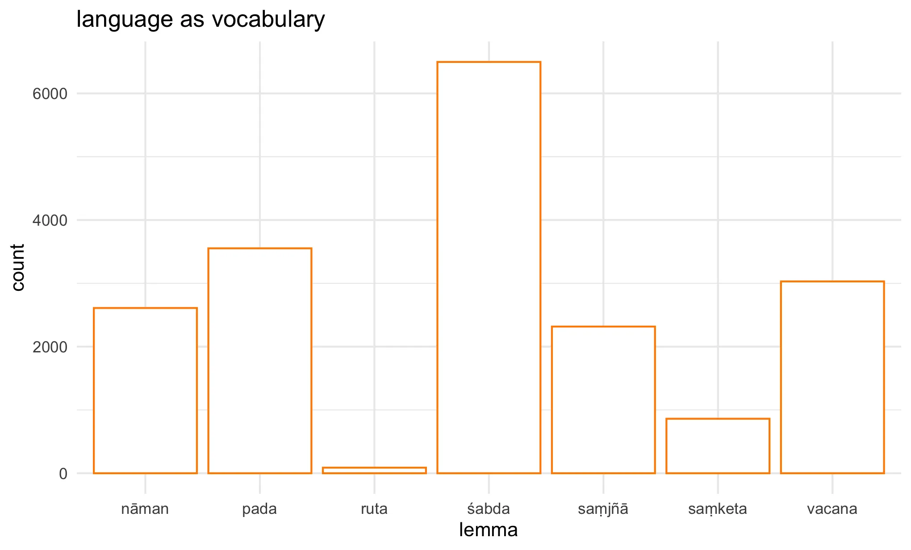
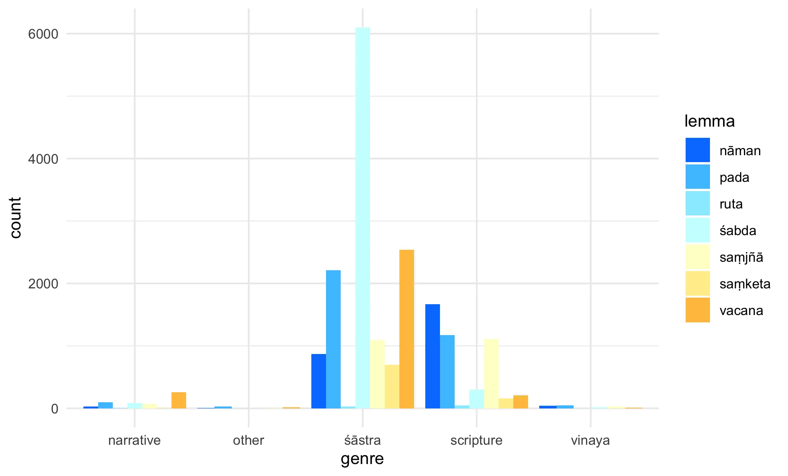
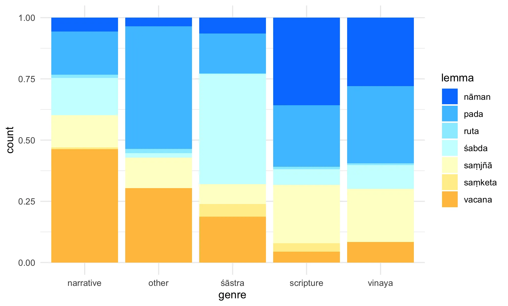
1.2 Language as naming
The naming aspect of language is mainly lexicalized by nāman, saṃjñā, ākhyāta, saṃketa and nāmadheya. Nāman is overall the most prototypical word in this sense, as this sense is also central to its semantic spectrum. Saṃjñā, especially when used in bahuvrīhi constructions to mean “called”, is also a prominent vocable in this area, although in Buddhist literature this is not its most prototypical sense. Nāmadheya is closely associated to sūtra literature, especially of prajñāpāramitā tradition, and consequently its use sharply declines with time.
Nāman features across the broadest range of contexts, from mundane personal naming to philosophical discussions. It appears as the most concrete and practical word for names, and especially for names as social identifiers. In our corpus nāman is used in this sense in contexts of personal naming and identification. For example, Mahāvastu, 10333 presents “bhavanto kumārasya sadṛśaṃ nāmaṃ karotha” (“Sirs, give a fitting name to the boy.” Jones II 375), while Ratnamālāvadāna, 1276 shows “kṛtvā jātimahaṃ nāma sthāpituṃ saṃvabhāṣire /” (“Having performed a birth ceremony, they spoke to establish a name.” [machine-translated with Dharmamitra]). In scriptures and philosophical contexts, it is often used to denote naming the objects of experience, in which case it often appears with the other near-synonyms discussed here, as in the Pañcaviṃśatisāhasrikāprajñāpāramitā, 17602 “a-nāmakāt sarva-dharmān nāma-saṃketena deśayat^īdaṃ rūpam ime vedanā-saṃjñā-saṃskārā /” where the Buddha teaches all phenomena “through names and conventional signs.”
Saṃjñā denotes the basic cognitive act of designation or conceptual recognition. In our corpus, it frequently appears in contexts where names arise naturally from circumstances or consensus, as in the Vinayavastu,11922 “agāram agāram iti saṃjñā udapādi” (“the designation ‘house’ arose”), and Vinayavastu, 11964 “mahāsaṃmato mahāsaṃmata iti saṃjñ^odapādi” (“The designation ‘Mahāsammata, Mahāsammata’ arose” [machine-translated with Dharmamitra]). Here saṃjñā carries a sense of immediate cognitive recognition and categorization and in this sense it is close to cases where it lexicalizes the interface between vocabulary, the way things are called, and notions, the way things are conceptualized, as in e.g. Divyāvadāna, 12692 “saṃjñā-mātrakam idaṃ lokasya yad idam ucyate brāhmaṇa iti vā kṣatriya iti vā vaiśya iti vā śūdra iti vā” (“What is called a Brāhmaṇa, Kṣatriya, Vaiśya, or Śūdra in this world is merely a conventional designation.” [machine-translated with Dharmamitra]) (see section Language as conceptualization below).
Ākhyāta functions quite differently, emphasizing the act of declaration, often by an authority figure. The corpus reveals its frequent use in religious contexts where Buddha or other teachers make authoritative statements. In Pañcaviṃśatisāhasrikāprajñāpāramitā, 12752 “pañca subhūte skandhās tathāgatena loka ākhyātaḥ” (“Subhūti, the five aggregates are proclaimed as the world by the Tathāgata.” [machine-translated with Dharmamitra]), we see ākhyāta used for authoritative religious teaching. Divyāvadāna, 3900 similarly shows “tathāgato arhan samyaksambuddhas teṣāṃ sattvānām agra ākhyātaḥ” (“Among those beings … a perfectly awakened tathāgata arhat is said to be the best.” [Rotman]), emphasizing official recognition or proclamation.
Saṃketa emphasises the socially agreed nature of names and often appears in discussions about the conventional or arbitrary nature of linguistic signs. Prajñāpāramitā literature frequently uses it to emphasize the merely conventional status of names. Pañcaviṃśatisāhasrikāprajñāpāramitā, 2496 states “anyatra nāma-saṃketa-mātreṇa vyavahriyate” (“Elsewhere, it is merely designated by a conventional name.” [machine-translated with Dharmamitra]), highlighting the arbitrary relationship between signs and their referents. This term consistently appears in contexts questioning the ultimate reality of linguistic designations.
Nāmadheya functions as a formal, ceremonial term for naming, particularly in ritual or official contexts. In our corpus it frequently features in the context of birth ceremonies and formal designations. Vinayavastu, 10730 describes “jātimahaṃ kṛtvā nāmadheyaṃ vyavasthāpyate /” (“After performing the birth ceremony, a name is bestowed.” [machine-translated with Dharmamitra]), while Lalitavistara, 1337 shows “kim ahaṃ kumārasya nāmadheyaṃ kariṣyāmi iti /” (“‘Now, what shall I name my young son?’” [Dahl et al. & 84000: Translating the Words of the Buddha]). The term carries connotations of formality and ceremonial importance.
CAUTION: the following content is AI-generated with Claude Sonnet 4 and has not been reviewed.
The sophisticated distinctions found in Buddhist Sanskrit reflect a broader cross-linguistic tendency to develop nuanced vocabularies for naming and designation. Several language families display remarkably similar patterns:
1.2.0.3 Arabic: Sacred and Secular Naming
Arabic displays parallel complexity with اسم (ism) as the fundamental term for name, لقب (laqab) for epithets or nicknames, كنية (kunya) for teknonyms, نسبة (nisba) for relational names, and دعوة (da’wa) for calling or designation. Islamic theological contexts distinguish between الأسماء الحسنى (al-asmā’ al-ḥusnā) - the beautiful names of God - and ordinary human naming, reflecting the Sanskrit distinction between authoritative (ākhyāta) and conventional (saṃketa) designation.
1.2.0.4 Latin: Legal and Religious Formality
Latin exhibits similar patterns with nomen (basic name), cognomen (family name), praenomen (personal name), appellatio (designation/calling), and denominatio (formal naming). Legal and religious contexts distinguish between nomen proprium (proper name) and nomen appellativum (common designation), paralleling Sanskrit distinctions between formal nāmadheya and conventional saṃjñā.
1.2.0.6 Hebrew: Sacred and Profane Distinction
Biblical and Rabbinic Hebrew distinguishes שם (shem) as the basic term for name, קריאה (qeri’ah) for calling/designation, כינוי (kinnuy) for epithets, and תואר (to’ar) for titles. The theological significance of divine names creates special categories like שם המפורש (shem ha-meforash) - the explicit name of God - versus ordinary human names, paralleling Sanskrit’s recognition of different types of authoritative designation. Germanic Languages: Compound Complexity
The sophisticated distinctions found in Buddhist Sanskrit reflect a broader cross-linguistic tendency to develop nuanced vocabularies for naming and designation. Several language families display remarkably similar patterns:
1.2.0.9 Arabic: Sacred and Secular Naming
Arabic displays parallel complexity with اسم (ism) as the fundamental term for name, لقب (laqab) for epithets or nicknames, كنية (kunya) for teknonyms, نسبة (nisba) for relational names, and دعوة (da’wa) for calling or designation. Islamic theological contexts distinguish between الأسماء الحسنى (al-asmā’ al-ḥusnā) - the beautiful names of God - and ordinary human naming, reflecting the Sanskrit distinction between authoritative (ākhyāta) and conventional (saṃketa) designation.
1.2.0.10 Latin: Legal and Religious Formality
Latin exhibits similar patterns with nomen (basic name), cognomen (family name), praenomen (personal name), appellatio (designation/calling), and denominatio (formal naming). Legal and religious contexts distinguish between nomen proprium (proper name) and nomen appellativum (common designation), paralleling Sanskrit distinctions between formal nāmadheya and conventional saṃjñā.
1.2.0.12 Hebrew: Sacred and Profane Distinction
Biblical and Rabbinic Hebrew distinguishes שם (shem) as the basic term for name, קריאה (qeri’ah) for calling/designation, כינוי (kinnuy) for epithets, and תואר (to’ar) for titles. The theological significance of divine names creates special categories like שם המפורש (shem ha-meforash) - the explicit name of God - versus ordinary human names, paralleling Sanskrit’s recognition of different types of authoritative designation.
1.2.0.13 Germanic Languages
Old Norse and Old High German developed rich compound systems: Old Norse nafn (name), heiti (designation), kenning (metaphorical name), and viðrnafn (additional name). These languages often encode the circumstances or authority of naming within compound structures, similar to how Sanskrit nāmadheya encodes ceremonial context.
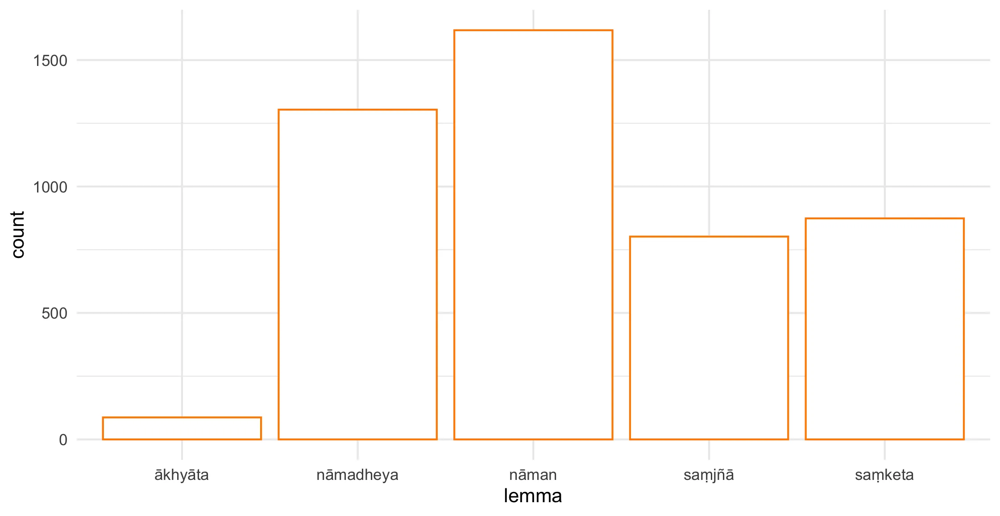
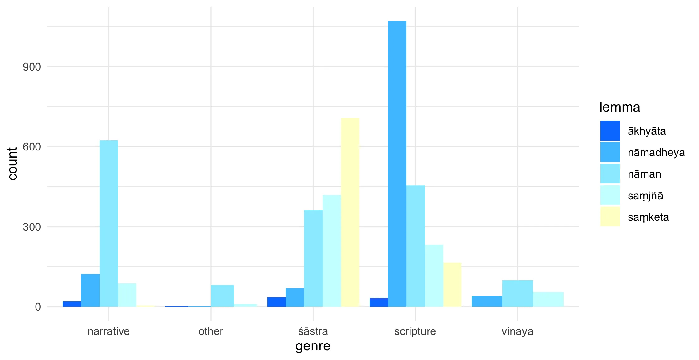
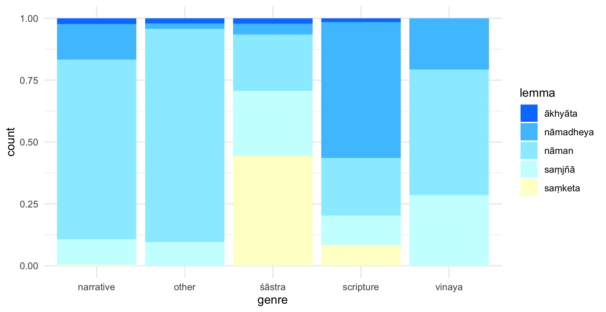
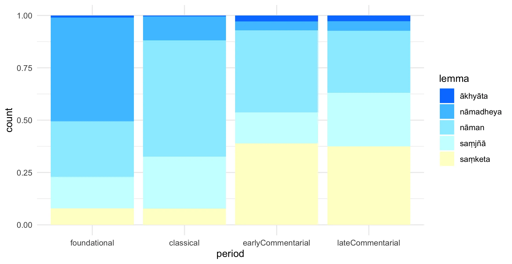
| lemma | avadāna | dhāraṇī | lit | sādhana | śāstra | stotra | sūtra | tantra | vinaya |
|---|---|---|---|---|---|---|---|---|---|
| ākhyāta | 16 | 0 | 4 | 0 | 35 | 2 | 19 | 11 | 0 |
| nāmadheya | 119 | 8 | 4 | 1 | 69 | 1 | 1,057 | 5 | 40 |
| nāman | 429 | 43 | 194 | 41 | 361 | 40 | 335 | 77 | 98 |
| saṃjñā | 63 | 0 | 25 | 0 | 418 | 9 | 219 | 13 | 55 |
1.3 Language as verbal expression
Several words are used to convey the general idea of language as verbal expression, ranging from speech to statement to the pronounciation of individual syllables. Chief among them are vāc, vacana, abhilāpa, prajñapti, ākhyāta, pada and akṣara.
Vāc is perhaps the most prototypical word in denoting speech in Buddhist literature, especially in sūtras. It denotes speech as an action, as in Suvikrāntavikrāmiparipṛcchā, 247: “na hi vāk-karmaṇā bodhiḥ prāpyate” (“For it is not by a deed of speech that one can attain enlightenment […].” [Conze 13]) and also typically in the triad kāya-vāk-manas, such as Guṇakāraṇḍavyūhasūtra, 1695: “kāya-vāco-manas-karma śodhayiṣyāmi sarvathā” (“I shall purify all actions of body, speech, and mind in every way.” [machine-translated with Dharmamitra]); or, in less doctrinal context, Buddhacarita, 702: “prakīrṇa-vācaḥ pathi maunam īyuḥ /” (“[…] those chattering on the road fell silent upon seeing him.” [Olivelle 281]).
Vacana is another prototypical word for speech, especially in śāstra and avadāna. In contrast with vāc, which primarily emphasises the action of speaking, vacana foregrounds the content of what is said. It can denote all kinds of speech, including negatively charged one, as in Śikṣāsamuccaya, 126: “para-varṇa-pratigha-vacanā vā /” (“… or words harmful to the reputation of others, …” [Goodman 123), however more typically it denotes authoritative speech. It often occurs in contexts of doctrinal teaching, especially in the compound buddhavacana, such as Bodhisattvabhūmi, 2788: “tathā hi bodhisattvena tīrthika-śāstreṣv api tāvad yogaḥ karaṇīyaḥ prāg eva buddha-vacane /” (“Since a bodhisattva should even strive to learn heretical treatises, how much more so should he or she [study teachings that are] the word of the Buddha.” [Engle]) and similar collocations, as in Samādhirāja, 129: “sarvaṃ c^āsya vacanaṃ buddha-parigṛhītaṃ niścarati //” (“And all his words emerge as accepted by the Buddha.” [machine-translated with Dharmamitra]).
Ākhyāta also foregrounds statements as authoritative proclamations, but shifts the emphasis to role of the statement in revealing some otherwise hidden truth, as in Larger Sukhāvatīvyūha, 64: “ākhyāt^ājita mayā pūrva-kuśala-mūla-pārami-prāptiḥ /” (“And I have proclaimed, Ajita, the way to gain the perfection of past roots of merit.” [Gómez 109]). The Guṇakāraṇḍavyūhasūtra repeatedly uses “ity ākhyātaṃ mun-^īśvaraiḥ” (“Thus it has been taught by the lords of sages.” [machine-translated with Dharmamitra]), establishing its association with authoritative religious pronouncement.
Prajñapti in this sense refers primarily to the instructions of teachers and formulations of monastic rules, which makes it strongly associated with vinaya literature. The Abhidharmakośabhāṣya, 7084 states “kathaṃ tāvad eṣām upāsaka-saṃvar-^ādīnām aṅga-pratiniyamo bhavati / śāstṛ-prajñapti-vaśāt /” (“Answer: How can we know the extent, the number of the rules of the disciplines of the Upasaka, the Sramanera, or the Bhiksu? Evidently through the teaching of the Master.” [Pruden 600]). This use of prajñapti is typical of the vinaya, Bhikṣuṇīvinaya, 1799: “saṃghātiśeṣan ti saṃghātiśeṣāye āpattīye saṃkāṣanā prakāśanā vivaraṇā vibhajanā uttānīkarmatā prajñaptiḥ /” (“La faute réparable par procédure donne lieu à élucidation, explication, éclaircissement, analyse, déclaration, promulgation.” [Nolot 91]).
Abhilāpa’s semantic focus is on verbal articulation and inexpressability. This is best captured by its cognate abhilapya, which is typically negated to signify the inexpressability of reality. Abhilāpa is also used in this way, as in Suvikrāntavikrāmiparipṛcchā, 1103: “eṣ^aiv^ātra āyuṣman śāradvatī-putra prajñāpāramitā yo ’vyāhāraḥ; an-udāhāraḥ ; an-abhihāraḥ ; an-abhilāpaḥ /” (“This perfection of wisdom in fact lies outside all conventional discourse, it is unutterable, unpronounceable, it cannot be talked about.” [Conze 43]), and it is typically associated with philosophical discourse about the gap between reality and what is verbally expressible, both in sūtra and scholastic literature, where it is also associated with the conceptual construction of reality, as in Nyāyabindu, 5: “abhilāpa-saṃsarga-yogya pratibhāsā pratītiḥ kalpanā” (“Conceptualization is the apprehension of an appearance that is suitable for verbal association.” [machine-translated with Dharmamitra]). However, abhilāpa can also convey the idea of verbally articulating anything, including the Dharma “etarhi ca mam^aiv^edam upāya-kauśalyaṃ dharma-deśan-^ābhilāpena yad yūyam etarhi nirvāṇam iti manyadhve /” [Saddharmapuṇḍarīka, 2347] (“In this you have to see an able device of mine that from the expressions used by me, in preaching the law, you fancy Nirvana to take place at this moment.” [Kern 202]).
Pada serves as the fundamental building block of meaningful discourse, consistently referring to words, verses, or linguistic units. A typical collocation in this sense is arthapada, e.g. Samādhirāja, 3000 “vyākari nāyaku āśayu jñātvā artha-padeṣu su-śikṣita-śāstā / deśayi śānta samādhi nar-^endras tatrimi artha-padāni śṛṇotha”, where the teacher is described as well-trained in meaningful words, or Bodhisattvabhūmi, 5880: “gambhīraṃ c ^ārtha-padaṃ prajñayā pratividhya kālena kālaṃ saṃprakāśayati /” (“Having fathomed statements of profound meaning with his or her wisdom, he or she reveals them [to others] at appropriate times.” [Engle]).
Akṣara operates at the most granular level as syllables or letters. In contrast with vyañjana (see Language as literal below), akṣara foregrounds the uttered, pronounced dimension of syllables and it often features in the context of mantra recitation, as in Śikṣāsamuccaya, 6029: “atra ca mantrāṇām a-jñānān n ^ādhik-^ākṣara-pāṭhe doṣo asti /” (“If, due to ignorance of the mantras, you recite additional syllables, there is no problem.” [Goodman 135]), or Divyāvādana, 13056: “catur-viṃśaty-akṣarā sāvitrī” (“The Sāvitrī verse consists of twenty-four syllables.” [machine-translated with Dharmamitra]).
CAUTION: the following content is AI-generated with Claude Sonnet 4 and has not been reviewed.
The sophisticated near-synonymy patterns observed in Buddhist Sanskrit find remarkable parallels across multiple language families, suggesting shared tendencies in how humans conceptualize and categorize verbal expression.
####Classical Greek: Philosophical Precision
Ancient Greek displays perhaps the most striking parallel to Sanskrit’s semantic granularity. The domain includes logos (reasoned discourse, cosmic principle), lexis (style of speaking, diction), rhema (utterance, verb), onoma (name, noun), phone (voice, sound), mythos (narrative speech), and epos (word, epic speech). Like Sanskrit’s system, Greek distinguishes between structural units (onoma/rhema paralleling pada), authoritative discourse (logos resembling vacana), and performative speech acts (epos/mythos echoing ākhyāta). The philosophical weight of logos particularly mirrors vāc’s cosmic dimensions, while lexis captures stylistic nuances absent in other traditions.
####Classical Arabic: Theological Sophistication
Arabic demonstrates comparable complexity through terms like kalām (speech, theology), qawl (saying, statement), lafẓ (pronunciation, verbal form), ḥarf (letter, particle), kalima (word), nuṭq (rational speech), and bayān (eloquent expression). The system shows striking parallels: ḥarf functions like akṣara as the atomic unit, kalima resembles pada as meaningful units, while kalām carries theological authority similar to vacana. Notably, nuṭq specifically denotes rational, articulate speech that distinguishes humans from animals, paralleling abhilāpa’s emphasis on conceptual construction.
####Classical Chinese: Contextual Stratification
Chinese exhibits a different but equally sophisticated pattern through characters like 言 (yán - speech, words), 語 (yǔ - language, discourse), 詞 (cí - word, expression), 字 (zì - character, written word), 聲 (shēng - sound, voice), 話 (huà - spoken words), and 辭 (cí - refined language, rhetoric). The system operates more contextually than morphologically: yán appears in formal, often written contexts; yǔ in conversational discourse; while cí (辭) specifically denotes elevated, literary expression. This contextual stratification parallels Sanskrit’s register distinctions but achieves them through different linguistic mechanisms.
####Latin: Institutional Authority
Latin’s system includes verbum (word), sermo (conversation, discourse), oratio (formal speech), dictum (saying, pronouncement), vox (voice), lingua (tongue, language), and eloquium (eloquent speech). The pattern emphasizes institutional and social authority: oratio denotes formal, public speech; sermo indicates informal discourse; dictum carries authoritative weight similar to ākhyāta. The distinction between verbum (semantic unit) and vox (phonetic reality) parallels the pada/akṣara relationship in Sanskrit.
####Hebrew: Sacred and Profane Dimensions
Biblical and Rabbinic Hebrew shows דבר (davar - word, thing, matter), אמר (amar - saying), מלה (milla - word), קול (qol - voice, sound), לשון (lashon - tongue, language), שיח (siach - speech, meditation), and הגה (haga - utterance, meditation). Uniquely, davar means both “word” and “thing,” suggesting deep ontological connections between language and reality that parallel prajñapti’s conventional establishment function. The sacred/profane distinction appears through terms like haga, used for both speech and religious meditation.
####German: Conceptual Precision
Modern German exhibits systematic near-synonymy through Wort (word), Sprache (language), Rede (speech, discourse), Aussage (statement), Äußerung (utterance), Ausdruck (expression), and Bezeichnung (designation). German’s compound-forming capacity creates precise distinctions: Bezeichnung specifically denotes the act of linguistic designation (paralleling prajñapti), while Äußerung emphasizes the externalization of internal states. The philosophical tradition from Herder through Heidegger has developed these distinctions with remarkable precision.
####Japanese: Honorific Stratification
Japanese demonstrates complexity through 言葉 (kotoba - words, language), 語 (go - word, language), 話 (hanashi - talk, story), 声 (koe - voice), 発言 (hatsugen - statement), 表現 (hyōgen - expression), and 言語 (gengo - language system). The system integrates honorific levels: different terms apply depending on social relationships and formality levels. This social stratification of near-synonyms, while different from Sanskrit’s philosophical distinctions, shows how languages can systematically organize semantic fields according to cultural priorities.
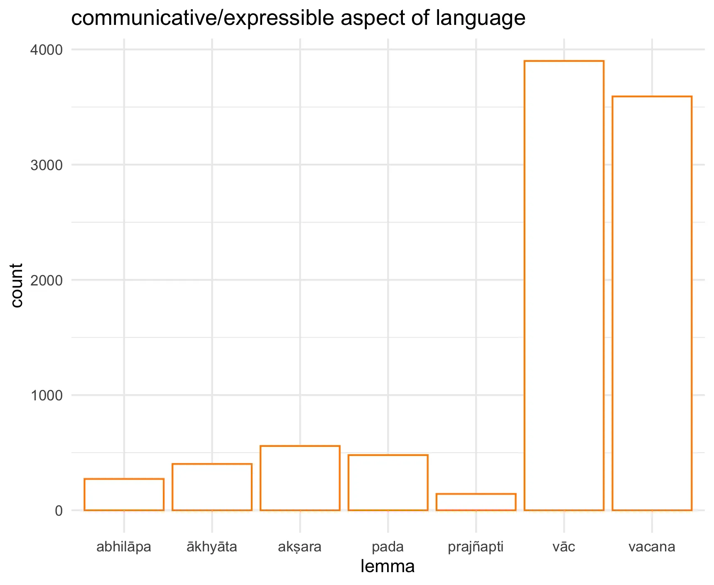
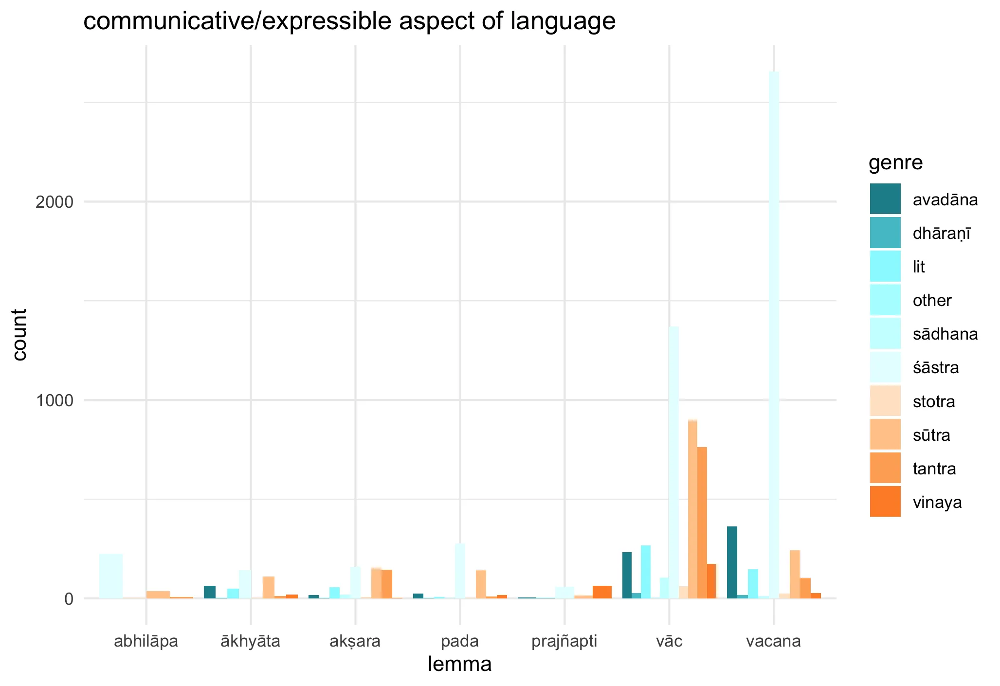 ### % by genre
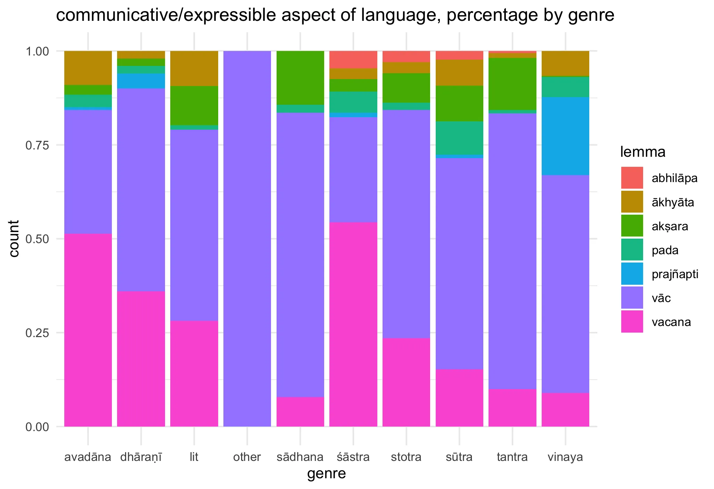
| lemma | avadāna | dhāraṇī | lit | other | sādhana | śāstra | stotra | sūtra | tantra | vinaya |
|---|---|---|---|---|---|---|---|---|---|---|
| abhilāpa | 0 | 0 | 0 | 0 | 0 | 226 | 3 | 37 | 6 | 0 |
| ākhyāta | 64 | 1 | 49 | 0 | 0 | 142 | 3 | 110 | 13 | 20 |
| akṣara | 18 | 1 | 55 | 0 | 20 | 159 | 8 | 152 | 144 | 1 |
| pada | 24 | 1 | 6 | 0 | 3 | 277 | 2 | 141 | 9 | 16 |
| prajñapti | 5 | 2 | 0 | 0 | 0 | 58 | 0 | 14 | 0 | 63 |
| vāc | 233 | 27 | 267 | 1 | 106 | 1,370 | 62 | 897 | 762 | 175 |
| vacana | 363 | 18 | 148 | 0 | 11 | 2,656 | 24 | 242 | 103 | 27 |
1.4 Language as conceptualization
The link between language and the conceptual construction of experience is a central theme in Buddhism. Two words articulate the interface between linguistic labels and notions, their conceptual counterpart: saṃjñā and prajñapti. Both words are polysemic and express several semantic nuances in the domain of language, but both words’ connection with language hinges precisely on their role in bridging vocabulary and concepts. They do so from two different angles. Saṃjñā, as its overall semantic spectrum suggests, captures the cognitive process that goes from perception to verbal labelling. Prajñapti, as the etymology suggests, does the reverse and ‘makes known’ concepts through verbal articulation. Since the meaning of these words is a blend of linguistic and cognitive processing of experience, it is often difficult, especially in the case of saṃjñā, to differentiate cases where these words point to language as conceptualization from cases where their meaning is wider. Hence we refrain from plotting the distribution of these words in this sense, as it may provide a misleadingly neat picture.
Saṃjñā often appears in compound formations that describe specific types of linguistically mediated notions or mental images, such as puruṣa-saṃjñā (Pañcakrama, 103: the notion of man) or śmaśāna-saṃjñā (Mahāvastu, 16955: the idea of a cemetery). Collocation with verbs of arising such as ut√pad indicates that saṃjñā is associated to a spontaneous mental categorization that arises in response to particular stimuli or situations, as in Mahāvastu, 12423: “śāriputrasya taṃ jana-kāyaṃ dṛṣṭvā a-nitya-saṃjñā utpannā” (“For when Śāriputra saw that great crowd of people there arose in him the awareness of the impermanence of things.” [Jones III 59]) or Vajracchedikā, 10: “āścaryeṇa samanvāgatā bhaviṣyaṃti ya iha sūtre bhāṣyamāṇe bhūtasaṃjñām utpādayiṣyaṃti / yā caiṣā bhagavan / bhūtasaṃjñā saivāsaṃjñā tasmāt tathāgato bhāṣate bhūtasaṃjñā bhūtasaṃjñeti /” (“They will come to be endowed with a most marvelous thing, Lord, who when this discourse is being preached conceive the idea that it is the truth. But any such idea of truth, Lord, is indeed idealess. Therefore the Realized One preaches the so-called ‘idea of truth.’” [Harrison 149]). However saṃjñā also encompasses abstract categorizations, typically those that one should overcome, which gives saṃjñā in this sense a rather negative connotation, as in Vajracchedikā, 17 “na satva-saṃjñā na jīva-saṃjñā na pudgala-saṃjñā” (“… nor will the idea of a living being, the idea of a soul, or the idea of a person occur.” [Harrison]) or Vimalakīrtinirdeśa, 2357: “na mārga-saṃjñā bhavati na kumārga-saṃjñā” (“… does not entertain any notions of a right path or a wrong path, …” [Gómez and Harrison 99]), or Samādhirāja, 744: “saṃjñā prahīṇa sarvā niravaśeṣā” (“All notions have been completely abandoned.” [machine-translated with Dharmamitra]).
Prajñapti by contrast has a less negative connotation. Its emphasis is more ontological than cognitive, appearing often in philosophical discourse about the superimposition of designation onto fundamentally unreal entities, with the topos of attaching the label ‘self’ to the five aggregates (see section on Language as construct), as in Abhidharmakośabhāṣya, 13761: “nahi te skandha-saṃtāna ev ātma-prajñaptiṃ vyavasyanti /” (“How do we know that the word ‘soul’ is only a designation for a series of skandhas, and that no soul exists in and of itself?” [Pruden 1313]), or Sphuṭārtha_abhidharmakośavyākhyā, 36741: “teṣv eva skaṃdheṣu pudgala-prajñaptiḥ prāpnoti” (“The designation of a person (pudgala) arises precisely in these aggregates (skaṃdha).” [machine-translated with Dharmamitra]), or Satyasiddhiśāstra, 2903: “pañca-skandhānāṃ kalāpaḥ prajñaptyā ātm^eti” (“The self [ātman] is a collection of the five aggregates existing nominally.” [machine-translated with Dharmamitra]). This labelling is rarely characterised as erroneous. Prajñapti is typically depicted as a ‘mere’ designation, not a wrong one: “prajñapti-mātrā tribhavaṃ nāsti vastu svabhāvataḥ” [Laṅkāvatārasūtra, 2741] (”52. The triple world is no more than thought-construction (prajñapti), there is no reality in its self-nature; …” [Suzuki]); “cakṣur-vijñānaṃ kauśika prajñapti-mātraṃ yat prajñapti-mātraṃ sā dharmatā” [Śatasāhasrikāprajñāpāramitā, 61237] (“O Kauśika, visual consciousness is merely a designation. That which is merely a designation is the ultimate reality.” [machine-translated with Dharmamitra]).
CAUTION: the following content is AI-generated with Claude Sonnet 4 and has not been reviewed.
1.4.0.1 Indo-European Languages
Greek displays a parallel distinction in philosophical contexts:
- νόησις (noesis) - immediate intellectual apprehension, direct cognitive grasp
- διάνοια (dianoia) - discursive thinking, conceptual reasoning through language
This mirrors the saṃjñā/prajñapti distinction, with noesis representing direct cognitive recognition and dianoia representing the conventional, step-by-step conceptual process.
German philosophical terminology shows:
- Anschauung - immediate intuitive perception/cognition
- Begriff - concept formed through social-linguistic convention Kant’s distinction between these terms parallels the Buddhist dyad, where Anschauung captures immediate cognitive apprehension while Begriff represents socially constructed conceptual categories.
French exhibits:
- aperception - immediate conscious recognition
- conception - conventional conceptual formation This appears in phenomenological contexts where aperception denotes direct cognitive awareness while conception involves linguistic-cultural construction.
1.4.0.2 East Asian Languages
Chinese philosophical vocabulary demonstrates:
- 知 (zhī) - direct knowing/recognition
- 名 (míng) - naming/conventional designation This distinction appears prominently in Daoist texts, where zhī represents immediate cognitive awareness while míng represents the conventional linguistic categories that potentially obscure direct understanding.
Japanese shows:
- 知覚 (chikaku) - direct perception/cognition
- 概念 (gainen) - conventional concept In Buddhist contexts, chikaku often translates saṃjñā while gainen corresponds to prajñapti-like conventional designations.
1.4.0.3 Semitic Languages
Arabic philosophical terminology displays:
- إدراك (idrāk) - immediate cognitive apprehension
- مفهوم (mafhūm) - conventional concept/understanding This appears in Islamic philosophical texts where idrāk represents direct cognitive grasp while mafhūm involves linguistically mediated conceptual construction.
Hebrew shows:
- השגה (hasagah) - direct cognitive attainment
- מושג (musag) - conventional concept This distinction appears in medieval Jewish philosophy, particularly in discussions of divine knowledge versus human conceptual categories.
1.4.0.4 Finno-Ugric Languages
Finnish exhibits:
- tiedostaminen - direct conscious awareness
- käsitteellistäminen - conceptualization through language The first emphasizes immediate cognitive recognition while the second involves conventional linguistic categorization.
1.4.0.5 Niger-Congo Languages
Yoruba demonstrates:
- mọ̀ - direct knowing/recognition
- orúkọ - naming/conventional designation This appears in traditional epistemological contexts where mọ̀ represents immediate cognitive awareness while orúkọ involves social-linguistic designation.
1.4.0.6 Austronesian Languages
Indonesian/Malay shows:
- kesadaran - direct awareness/consciousness
- pengertian - conventional understanding/concept The distinction appears in philosophical translations where kesadaran captures immediate cognitive recognition while pengertian involves linguistically mediated understanding.s
1.5 Language as construct
Much of the Buddhist philosophical treatment of Language focuses on the idea that language is an artificial construct we use to approximatively talk about phenomena, but ultimately has no ontological foundation and no real link to those phenomena. This is a topic instantiated almost exclusively in sūtra and śātras, so the following analysis will zoom in on these two text types only. The principal vocabulary used to convey this aspect of language as construct consists of prajñapti, vyavahāra, saṃketa and upacāra. While they all express the idea that language is but an artificial approximation of reality, only vyavahāra and saṃketa can be taken as near-synonyms, as they both stress the socially agreed, or conventional, dimension of language. Prajñapti, by contrast, foregrounds the ontological aspect of language as a conceptual construct that lacks a real foundation. Finally, upacāra highlights the metaphorical, non-literal, aspect of communication, whereby unreal phenomena can be named in a manner of speaking, without implying their existence. Interestingly, the ontological aspect lexicalized by prajñāpti is widespread in earlier layers of the corpus, where it features prominently in prajñāpāramitā sūtras, abhidharma and philosophical treatises, but steadily declines overtime, being replaced by words foregrounding the socially agreed aspect of language, with vyavahāra and, to a lesser extent, saṃketa dominating the lexical field of language as construct in pramāṇa literature of later periods. The inverse correlation between language as conceptualization and language as construction in the plot below evidences the diachronic shift in emphasis from language as conceptual construct devoid of an ontological basis towards an understanding of language as a social construct based on consensus.9
Prajñapti, together with vyavahāra, are the most prototypical words that lexicalize this aspect of language. Prajñapti emphasises the cognitive and ontological dimension of this domain, conveying the idea of words as conceptual constructs superimposed on ultimately unreal phenomena. The frequent collocation prajñapti-sat features prominently in abhidharma and philosophical texts, where it is typically contrasted with dravya-sat and, at times, paramārtha-sat, as in Laṅkāvatārasūtra, 62: “prajñapti-satyato hy ātmā dravya-san na hi vidyate / skandhānāṃ skandhatā tadvat prajñaptyā na tu dravyataḥ //” (“An ego-soul is a truth belonging to thought-construction, in which there is no real reality; the self-nature of the Skandhas is also a thought-construction, as there is no reality in it.” [Suzuki 132]), or Satyasiddhiśāstra, 12919: “yogī pūrvaṃ dharmāḥ kiṃ prajñapti-santaḥ kiṃ vā paramārtha-santa iti jñātvā …” (“The yogi, having first known whether phenomena are conventionally existent or ultimately real, …” [machine-translated with Dharmamitra]).
Vyavahāra is the most prominent word expressing the idea that language is a social convention. This sense constitutes the very core of vyavahāra semantic spectrum, which makes this word the prototypical choice for expressing the practical utility of language despite its limitations, as in Vigrahavyāvartanī, 262:“vyavahāram anāśritya paramārtho na deśyate /” (“Not having had recourse to the conventional, the absolute is not taught.” [Westerhoff 29]), or Abhisamayālaṃkārāloka, 11370: “sarva-dharmāś ca nāmamātreṇa vyavahāra-mātreṇ ābhilapyanta iti” (“All phenomena are designated merely by names and conventions.” [machine-translated with Dharmamitra]).
Saṃketa emphasizes the arbitrary yet systematic nature of linguistic convention and the role of mutual agreement in establishing meaning. It refers specifically to conventional signs and agreed-upon meanings. Later literature uses this word to clarify the mechanics of how semantic relationships are established, as in Pramāṇavārttikālaṅkārabhāṣya, 10522: “tasmāt saṃketa-kāle pi nir-dṛṣṭ-^ārthena saṃyutaḥ” (“Therefore, even at the time of convention, [a word] is conjoined with a designated object.” [machine-translated with Dharmamitra]) and Pramāṇavārttikālaṅkārabhāṣya, 10333: “saṅketa-anvayinī rūḍhir vaktur icchā-anvayī ca saḥ” (“Conventional usage is connected to a signal, and it is also connected to the speaker’s intention.” [machine-translated with Dharmamitra]). In earlier period and sūtra literature the connection with arbitrary decisions is less explicit but still present, as in Samādhirāja, 299: “katamaḥ nāma-saṃketaḥ / yad idaṃ a-pariniṣpannānāṃ nāmnām anubudhyanatā //” (“What is the knowledge of assigned names? It is the understanding that names are without reality.” [Roberts/84000 40.66]).
Upacāra lies at the margin of these lexical field, as it expresses a more deliberate form of linguistic construction than the words we have previously analysed. It denotes the non-literal aspect of verbal expression, whereby things are meant by figure of speech, especially metonymy, such as designating the effect by the cause, or applying collective terms to individual parts, as in Abhidharmakośabhāṣya, 10128: “prahāṇa-parijñā tu prahāṇam eva / phale het-^ūpacārāt /” (”‘perfect knowledge which produces abandoning,’ which is abandoning itself, for the effect is designated by the name of its cause.” [Pruden 859]) or Hetubinduṭīkā, 219: “avayave samudāy^opacārāt” (“Due to the figurative use of ‘whole’ for a ‘part.’” [machine-translated with Dharmamitra]).
1.5.0.1 German Philosophical Terminology
German has perhaps the most developed set of terms, particularly through phenomenology and hermeneutics:
Konstruktion - deliberate cognitive construction Konstitution - phenomenological constitution of meaning Setzung - positing or stipulation (Husserlian) Vereinbarung - conventional agreement Sprachspiel - language game (Wittgensteinian) Verständigung - mutual understanding/communication These terms emerged from German idealism and phenomenology, creating nuanced distinctions between different modes of meaning-construction.
1.5.0.2 French Post-Structuralist Vocabulary
French developed a rich terminology through structuralism and post-structuralism:
Convention - social convention Construction - cognitive/social construction Stipulation - arbitrary stipulation Signification - meaning-making process Énonciation - the act of enunciation (vs. énoncé - the statement) Discours - discourse as constructed practice
1.5.0.3 Classical Chinese Philosophical Terms
Chinese philosophy, particularly in discussions of language and reality, developed several key terms:
名 (míng) - names/designations 約定 (yuēdìng) - conventional agreement 假名 (jiǎmíng) - provisional/false names 施設 (shīshè) - conventional establishment 言說 (yánshuō) - verbal expression/discourse Notably, 施設 (shīshè) is actually the Chinese translation of Sanskrit prajñapti, showing direct conceptual borrowing.
1.5.0.4 Ancient Greek Philosophical Terminology
Greek philosophy established foundational distinctions:
Νόμος (nomos) - convention (vs. φύσις/physis - nature) Σύνθημα (synthema) - agreed sign/token Θέσις (thesis) - stipulation/positioning Συνθήκη (syntheke) - compact/agreement Διάλεκτος (dialektos) - discourse/dialect Modern English Academic Clusters English has developed several overlapping terminological clusters:
Cognitive Science: conceptualization, categorization, construal, framing Sociology: social construction, convention, discourse, practice Philosophy of Language: stipulation, designation, reference-fixing, semantic agreement
1.5.0.5 Significant Patterns
Deliberate vs. Emergent Construction - Most languages distinguish between conscious stipulation and unconscious social emergence Individual vs. Social - Terms often differentiate cognitive construction from social agreement Temporary vs. Stable - Many languages mark whether constructions are provisional or established Metaphorical vs. Literal - Recognition of extended vs. primary usage
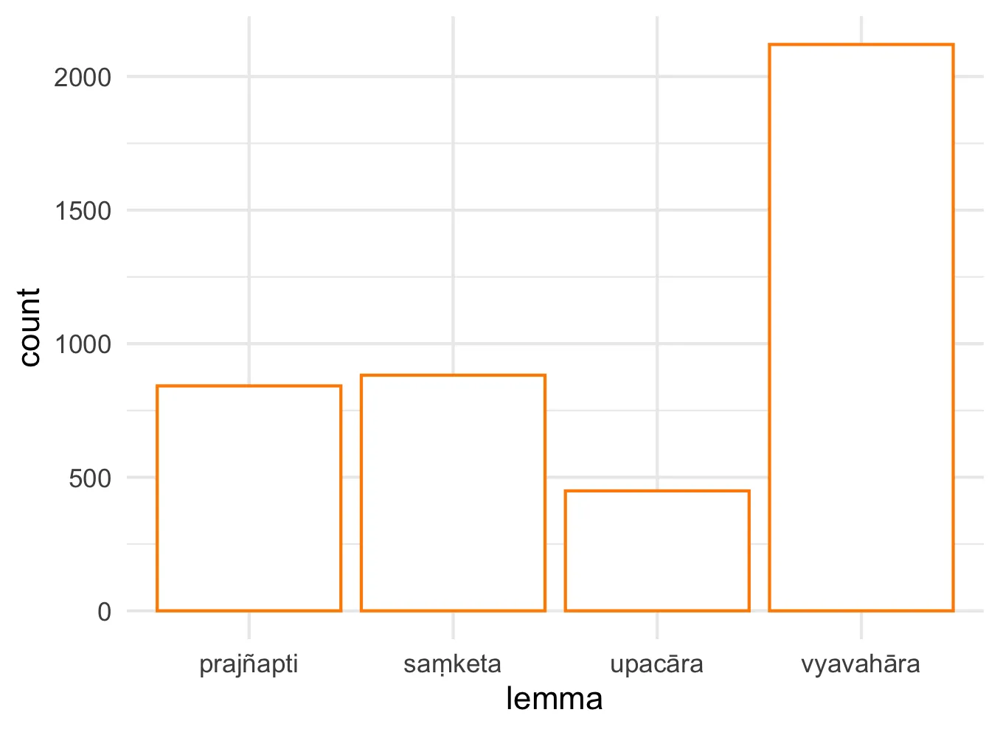
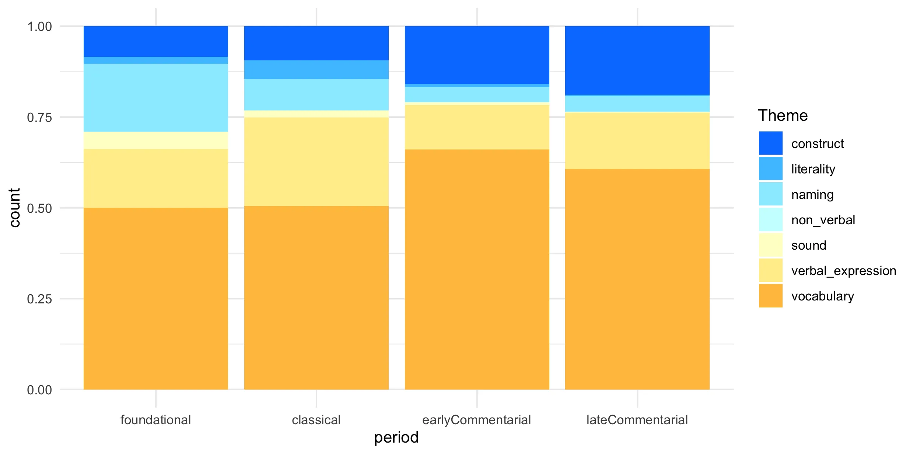
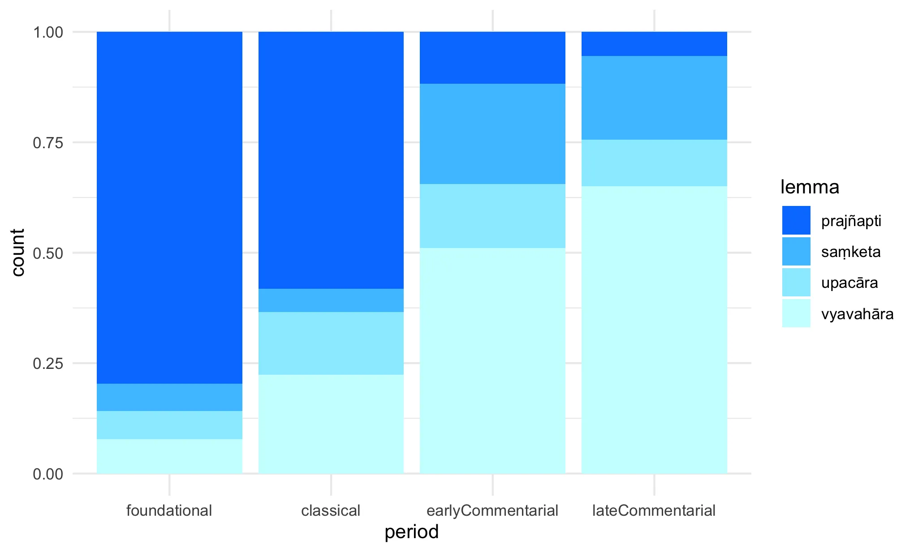
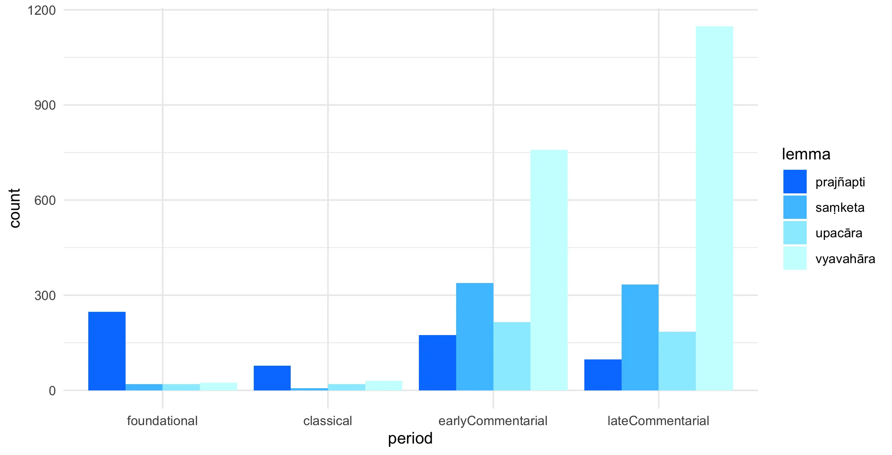
1.6 Language as sound
Three near synonyms express the concept of language as sound in our corpus, ghoṣa, ruta, and śabda. Ghoṣa is perhaps the most prototypical word to convey this aspect of language, as this specific meaning is central to its semantic spectrum (see our ghoṣa lexical portrait).
While the overall meaning of these words in the sense of verbal sound is similar, each carries unique contextual and connotational qualities.
Ghoṣa emerges as perhaps the most spiritually charged term among the three. It frequently appears in contexts describing divine or transcendent vocal expressions, particularly those associated with the Buddha and other enlightened beings. An example is Bauddhastotrasaṃgraha, 1157: “sarva-sur-^āsurasu svara-ghoṣaṃ brahma-ruta-svara-garjita-ghoṣam”, where ghoṣa is explicitly linked to divine sound that resonates across celestial realms. The term consistently appears in descriptions of proclamations that carry profound spiritual significance, as in the Saddharmapuṇḍarīka, 1335 where “ghoṣam anuśrāvayati” describes the transmission of the Dharma. A typical but semantically illuminating use is the scholastic explanations of ghoṣa as meaningful sound in the context of language, as in Abhidharmakośabhāṣya, 2723: “vāṅ-nāmni pravrttate nām-^ārthaṃ dyotayati n ^aiva ghoṣa-mātraṃ vāg yena tu ghoṣeṇ ^ārthaḥ pratīyate sa ghoṣo vāk /” (“They are not ‘voice.’ Voice is ‘vocal sound,’ and a vocal sound only; for example, a cry does not cause one to attain to or comprehend an object. But a word (nāman) which moreover is a function of vocal sound, illumines, causes one to attain to, or signifies the object.” [Pruden 251]).
Ruta, by contrast, carries a more melodious and aesthetically refined quality. The term appears frequently in poetic contexts where the beauty and harmony of sound are emphasized. For example, Ratnagotravibhāga, 1476: “surendraratnapratibhāsadarśanaḥ sudaiśiko dundubhivad vibho rutam | vibhur mahājñānakṛpābhramaṇḍalaḥ spharaty anantaṃ jagad ā bhavāgrataḥ” (“The excellent teacher has an appearance Like the reflection of the chief of gods on the jewel, His voice is like the [sound of] the divine drum, Having the great sphere of the clouds of Wisdom and Mercy, He pervades an unlimited number of living beings, Up to the highest limit of existence.” [Takasaki 376]), where ruta is associated with the magnificent sound of celestial drums, emphasizing its musical and rhythmic qualities. The word often appears in descriptions of voices that are not merely heard but appreciated for their tonal beauty, such as Mahāvastu, 9335: “so maṃjughoṣo ruta-valgu-bhāṣī …” (“The Bodhisattva …uttered this consummate speech in his entrancing and sweet-sounding voice.” [Jones II 301]), where ruta modifies speech that is specifically characterized as sweet and melodious. This suggests that ruta encompasses not just the acoustic properties of sound but its aesthetic and emotional impact on listeners. Unlike the other near-synonyms in this area, ruta rarely appears in contexts of mere announcement, instead gravitating toward descriptions of naturally beautiful or divinely pleasant sounds.
Śabda demonstrates the broadest semantic range and appears to function as the most neutral and comprehensive term for sound and speech. It encompasses everything from ordinary human communication to divine proclamations, but without the specialized connotations of its counterparts. Sentences like Saddharmapuṇḍarīka, 1334: “sa-deva-mānuṣ-^āsurasya lokasya purata evaṃ śabdam udīrayati” (“… the Tathāgata, the Arhat, &c., before the face of the world, including gods, men, and demons, lifts his voice …” [Kern 120]) show śabda describing the Buddha’s teaching voice addressing all realms of existence, but the focus is on communicative function rather than spiritual quality. Śabda appears frequently in narrative contexts describing various types of sounds, from the distressing cries in Divyāvadāna, 16160: “tatra tāni pañca-mātrāṇi māṇavaka-śatāni uccaiḥ śabdāni procur mahā śabdāni” (“There, those five hundred young Brahman students loudly uttered many sounds.” [machine-translated with Dharmamitra]) to voices emerging from space in Dvāviṃśatyavadānakathā, 1792: “tata ākāśāc chabdo niścārita …” (“Then, a sound emanated from the sky.” [machine-translated with Dharmamitra]).
The contextual differences become even more apparent when examining how these terms interact with their surrounding vocabulary. Ghoṣa frequently collocates with words related to spiritual realization and divine presence, often appearing alongside words like buddha, dharma, and vajra. Ruta tends to appear with aesthetic qualifiers and in descriptions of pleasing or harmonious sounds, often modified by words suggesting beauty or melodiousness. Śabda, meanwhile, appears in the widest variety of contexts, from mundane announcements to cosmic proclamations, suggesting its role as the unmarked term in this semantic field.
CAUTION: the following content is AI-generated with Claude Sonnet 4 and has not been reviewed.
Several languages exhibit similar fine-grained distinctions for the auditory aspects of language, though perhaps none quite as systematically as Sanskrit.
Classical Greek offers a particularly rich parallel. The language distinguishes between phōnē (φωνή), logos (λόγος), and rhēma (ῥῆμα) in ways that echo your Sanskrit triad. Phōnē refers to voice or sound in its physical manifestation, logos encompasses reasoned speech with philosophical or divine connotations (think of the opening of John’s Gospel: “In the beginning was the logos”), and rhēma focuses on the utterance as a unit of meaning. Greek also has ēchos (ἦχος) for resonant sound, which appears in contexts describing oracular pronouncements or divine voices.
Arabic presents another compelling case with ṣawt (صوت), kalām (كلام), and qawl (قول). Ṣawt is the general term for sound, kalām carries theological weight (it’s used for divine speech and is central to Islamic theology), while qawl refers to human utterance or saying. The Quran’s own self-reference as kalām Allāh (the speech of God) shows how these distinctions carry profound religious significance.
Japanese offers interesting parallels with koe (声) for voice, oto (音) for sound, and kotoba (言葉) for words/language. But perhaps more intriguingly, Japanese has hibiki (響き) for resonance or reverberation, which often appears in aesthetic contexts much like Sanskrit ruta.
Classical Chinese distinguishes between shēng (聲) for voice/sound, yīn (音) for tone/musical sound, and yán (言) for speech/words. The philosophical tradition makes much of these distinctions, particularly in discussions of music theory and the relationship between sound and meaning.
The Germanic languages, including Old English, had similar tripartite systems: stefn/stimme for voice, hlūd/laut for loud sound, and word/wort for word/speech, though these distinctions have somewhat flattened in modern English.
1.7 Language as literal
Considerable attention is given in Buddhist literature to the literal dimension of language, that is language as a set of signs as opposed to what they signify. Two main words lexicalize this aspect of language: ruta and vyañjana. While both are associated with the hermeneutic discourse and the Mahāyāna opposition between words and meanings, these two vocables are not synonyms.
Ruta typically expresses the idea of literality in the construction yathā-ruta, which circumscribes the wider sense of ruta as the audible aspect of words, which may evoke the idea of textual recitation and oral memorization of teachings. In this sense, ruta tends to acquire a negative connotation as the literal knowledge of the words and the teachings, often contrasted with the understanding of their meaning. In our corpus, the negative connotation of ruta as the literal aspect of words is amplified by its over-representation in a single text, the Laṅkāvatārasūtra, where ruta is consistently identified as soteriologically problematic, e.g. Laṅkāvatārasūtra, 3266: “rutaṃ vikalpa-saṃbaddhaṃ saṃsār-^āvāhakam /” (“Words are bound up with discrimination and are the carrier of transmigration.” [Suzuki 169).
Vyañjana denotes letters or syllables, the building blocks of verbal expressions. Together with nāman and pada it makes up language, according to the traditional categorization nāma-pada-vyañjana-kāya.10 Yet, while nāman and pada tend to be discussed for their semantic properties and association with word-referents, vyañjana, like ruta, is typically contrasted with meaning and considered for its formal rather than semantic value. This lends vyañjana a negative connotation in contexts where the gap between mere words and the inexpressible reality is emphasised, as in Laṅkāvatārasūtra, 3236: “artha-pratiśaraṇena mahāmate bodhisattvena mahāsattvena bhavitavyaṃ na vyañjana-pratiśaraṇena /” (“Therefore, Mahāmati, let the Bodhisattva-Mahāsattva be in conformity with the meaning and not with the letter.” [Suzuki 167-168]), but opens the possibility of positive characterization in contexts where the well-spoken statements are praised, typically in discussions of the importance of a pairing profound meaning with pleasingly-spoken words for preaching, as in the phrase sv-arthaṃ su-vyañjanaṃ”, e.g. Lalitavistara, 74: “sv-arthaṃ su-vyañjanaṃ kevalaṃ paripūrṇaṃ pariśuddhaṃ paryavadātaṃ brahmacaryaṃ sattvānāṃ saṃprakāśayiṣyati /” (“He will share a teaching of pure conduct, […] It will be a teaching with excellent meaning and excellent words. It will be unique, perfect, pure, purifying, and consummate.” [Dahl et al./84000 7.96]).
CAUTION: the following content is AI-generated with Claude Sonnet 4 and has not been reviewed.
1.7.0.1 Arabic
Arabic offers multiple terms for language’s literal aspects: - ḥarf (حرف) - letter, character, particle - lafẓ (لفظ) - utterance, pronunciation, verbal expression - kalima (كلمة) - word as spoken unit - ṣawt (صوت) - sound, phonetic element These contrast with ma’nā (معنى) meaning “meaning” or “sense”
1.7.0.2 Hebrew
Hebrew distinguishes: - ʾot (אות) - letter, sign, character - millah (מילה) - word as unit - ṣurah (צורה) - form, shape (of language) - qol (קול) - voice, sound Versus mashmaʿut (משמעות) for “meaning”
1.7.0.3 German
German provides sophisticated distinctions: - Buchstabe - letter, character - Laut - sound, phoneme - Wortlaut - exact wording, literal text - Klang - sound quality, resonance - Schrift - writing, script Contrasted with Bedeutung (meaning) and Sinn (sense)
1.7.0.4 Chinese
Classical and modern Chinese offer: - 字 (zì) - character, written form - 音 (yīn) - sound, pronunciation - 聲 (shēng) - voice, tone - 文 (wén) - written language, script - 詞 (cí) - word as linguistic unit Distinguished from 義 (yì) or 意 (yì) for meaning
1.7.0.5 Japanese
Japanese inherited and developed: - 文字 (moji) - letter, character - 音 (on) - sound, pronunciation - 声 (koe) - voice - 語 (go) - word as unit - 字面 (jimmen) - literal surface Versus 意味 (imi) for meaning
1.7.0.6 Greek
Ancient and modern Greek distinguish: - gramma (γράμμα) - letter, written mark - phōnē (φωνή) - voice, sound - lexis (λέξις) - word, diction - rhēma (ῥῆμα) - utterance, spoken word From logos (λόγος) or nous (νοῦς) for meaning/sense
1.7.0.7 Latin
Latin provides: - littera - letter, character - sonus - sound - vox - voice, utterance - verbum - word as spoken unit - scriptum - written form Contrasted with sensus or significatio for meaning
1.7.0.8 Persian/Farsi
Persian offers: - ḥarf (حرف) - letter (borrowed from Arabic) - āvāz (آواز) - voice, sound - kalame (کلمه) - word - neveshteh (نوشته) - written form Versus ma’nī (معنی) for meaning
1.7.0.9 Russian
Russian distinguishes: - bukva (буква) - letter - zvuk (звук) - sound - slovo (слово) - word as unit - proiznoshenie (произношение) - pronunciation From smysl (смысл) or znachenie (значение) for meaning
1.7.0.10 Turkish
Turkish provides: - harf - letter (from Arabic) - ses - sound, voice - söz - word, utterance - yazı - writing, script Versus anlam or mana for meaning
1.7.0.11 Interesting Patterns
Several patterns emerge across these languages:
Sound vs. Script: Most languages distinguish auditory (sound/voice) from visual (letter/character) aspects of literal language.
Unit Distinctions: Many languages differentiate between minimal units (letters/sounds) and larger units (words/utterances).
Form vs. Substance: The literal/meaning distinction often parallels broader philosophical categories of form versus substance or appearance versus reality.
1.8 non-verbal language
A discussion of aspects of language would not be complete without mention of non-verbal communication. This theme is not frequent in our corpus. When it is, two words are usually used to express it, saṃjñā and saṃketa.
Saṃjñā appears frequently in contexts involving hand gestures (hasta-saṃjñā), as seen in multiple instances where people communicate through hand signals when verbal communication is impossible or inappropriate. For example, in Āryaśūra_jātakamālā, 3082 we see “strī-jan-^ādhikṛtair bhaya-viṣāda-vyākulitair hasta-saṃjñābhir apasāryamāṇā …” (“The eunuchs, who were likewise alarmed, affected with anxiety, and afflicted, made signs to them with their hands that they should withdraw, …” [Speyer 361]) or Āryaśūra_jātakamālā, 3281: “ath^ainam anye kṣut-tarṣa-śrama-dharma-duḥkh-^ātura-śarīrāḥ kṛt-^āñjalayaḥ sāśru-nayanāḥ samabhipraṇamy^ārtatayā hasta-saṃjñābhiḥ pānīyam ayācanta /” (“Then some of them, who suffered intensely from the pain of hunger, thirst, fatigue, and heat, after bowing to him with folded hands and eyes wet with tears, in the manner of supplicants, asked him for water by means of signs with their hands.” [Speyer 393]).
Saṃketa, in line with its overall meaning of agreed convention, can mean a signal or established gesture, especially with √kṛ, as in Samādhirāja, 239: “akṣibhyāṃ c^ānena saṃketaḥ kṛtaḥ” / (“The king thought, ‘This bhikṣu is looking at my queens with lust in his mind and he is winking at them’!” [Roberts/84000 36.68]). In some cases it may refer to established symbolic systems within religious practice, as in Abhiṣekanirukti, 14: “tasmāt sarveṣu tantreṣu saṃketena ca mudrayā …” (“Therefore, in all tantras, by means of conventional signs and mudrās …” [machine-translated with Dharmamitra]), where saṃketa refers to established symbolic systems within religious practice.
1.9 Documentation
This entry has been made following procedure outlined in the Preface methodology section. Specifically, this entry is based on 33,357 sentences taken from version v20 of our corpus (https://zenodo.org/records/17377159) and semantically tagged with Claude Sonnet 3.7. An evaluation of the accuracy of the tags for each word can be found in Lugli 2025.
1.9.1 categorization
1.9.1.1 Periodization
We follow here the periodization of our corpus Metadata, with some alteration.
foundational period includes earlier texts up to about the end of the 3rd century CE
classical includes texts likely composed around the 4th-5th century CE. Here we included texts with date_range = “5.-6. CE” and “4.-6. CE” in the corpus Metadata, whereas in the corpus Metadata those are categorizes as ‘commentarial’ and ‘uncertain’ respectively.
early commentarial represents one of the two intervals into which we split the Metadata’s ‘commentarial’ period. Early commentarial includes texts likely dating from the 6th to the 8th century CE
late commentarial includes texts from around the 9th up to about the 14th century CE.
1.9.1.2 genres
We adhere to the categorization provided in the corpus Metadata; to simplify some graphs, we sometimes aggregate several genres in wider categories:
scriptures include sūtra, tantra and dhāraṇī.
narrative includes literature and avadānas.
other gathers genres for which we have only few/short texts in the corpus, like stotra and sādhana.
1.9.1.3 thematic categorization
We take 32 semantic tags as pertaining to Language and divide them into themes through qualitative analysis.
vocabulary includes the following tags:
“word”
“words”
“name/word”
“word/term”
“word/phrase”
“statement/sentence”
“conventional designation/name”
naming includes:
“known as/called”
“name/title”
“conventional designation/name”
“name/word”
“name/named”
“name/named/called”
“name/called”
name”
verbal_expression:
“made known/revealed”
“what is uttered”
“statement/sentence”
“utterance/act of speaking”
“exposition/formulation”
“statement”
“instruction/command”
“verbal expression”
“verbalization”
“speech”
conceptualization:
“term/concept”
“designation_verbal expression/notion”
construct includes:
“manner of expression”
“conventional designation/name”
“consensus (esp. linguistic)”
“consensus/convention”
“language usage/communication practice”
“usage/practical communication”
“nominal existence (+sat)”
“designation_verbal expression/notion”
sound:
“sound of speech”
“utterance”
non_verbal:
“signal/gesture”
“mark/sign”
literality:
“words” (for ruta only)
“phoneme/letter”
Two tags are included in multiple themes, “designation_verbal expression/notion” and “conventional designation/name”. “designation_verbal expression/notion” tags cases where prajñapti points to unsubstantiality and conceptually constructed character of words. This pertains both to the theme of language as construct (e.g. Samādhirāja, 3345: “prajñapti-vyavahāraḥ yad idaṃ loka vyavahāraḥ”; “What is the use of designations? It is worldly usage” [Roberts/84000 40.66-67]), and to that of language as conceptualization (e.g. Abhidharmakośabhāṣya, 6416: “na ca saṃsthānaṃ paramāṇau vidyate dīrgh^ādi / tasmād bahuṣv eva tathā saṃniviṣṭeṣu dīrgh-^ādi-prajñaptiḥ / atha mataṃ saṃsthāna-paramāṇava eva tathā saṃniviṣṭā dīrgh-^ādi-saṃjñāṃ labhanta iti /”; “There is no atom of length. […] Therefore what we designate as long is a number of real things,—atoms of color,—arranged in a certain manner.” [Pruden 557-8]).
“conventional designation/name” tags cases where saṃketa refers to a word. Given that the socially constructed nature of assigning names to things is intrinsic in the meaning of saṃketa, this tag applies equally to the “vocabulary”, “naming” and “construct” themes.
For the theme overview graph we have counted “conventional designation/name” under “vocabulary” and ““conventional designation/name” under construct.
yena rūpam ity evam ādinā nāmnā te rūp-^ādi-saṃjñakā dharmā abhilapyante ’nuvyavahriyante rūpam iti vā vedan^eti vā vistareṇa yāvan nirvāṇam iti vā / [*Bodhisattvabhūmi*, 786](By whatever names-such as those of ‘form,’ etc.—the entities known as form, etc., are expressed and verbally described—[that is, the entities that are expressed by the names] ‘form,’ ‘feeling,’ [and so on] at length up to ‘nirvana’ […].” [Engle 85])↩︎
vastu-svabhāv-^ābhidhāna-mātraṃ nāma viśiṣṭa-vastu-svabhāv-^ābhidhānam padam iti / *Pañcaskandavibhāṣa*, 1869↩︎
an-ant^eti śāradvatīputra a-paryanta-vacanam etat / *Suvikrāntavikrāmiparipṛcchā*, 965↩︎
yaṃ dvitīyā sukh^opapattir iti ayam atra tadyathā-śabdo dṛṣṭānta-vācaka iti yukta etasmāc cheṣa-saṃpratyayaḥ / [*Abhidharmakośabhāṣya*, 75](“In the two passages given above the word tadyathā is used to introduce an example. We must translate tadyathā not as ‘namely’ but as ‘for example’. It is a rule concerning examples that when one names one case one designates all similar cases.” [Pruden 237])↩︎
rut-^ānyatvāt na c^āsya yathārutam arthas tasmān na yathārut-^ārth-^ānusāreṇ^edam a-buddha-vacanaṃ veditavyaṃ / *Mahāyānasūtrālaṃkāra*, 64↩︎
yaḥ pitta-dāhena vidahyamānaḥ śīta-kriyāṃ bhoga iti vyavasyet / duḥkha-pratīkāra-vidhau pravṛttaḥ kāmeṣu kuryāt sa hi bhoga-saṃjñām // 11 — 40 // [*Buddhacarita*, 777](“A man who, as he’s burning with bilious fever, decides ‘cold remedies are enjoyments,’ He, indeed, while using remedies for suffering, would give the name ‘enjoyment’ to pleasures.” [Olivelle 311])↩︎
udak-^ārambaṇen^ā-bhūtasya meghasy^ānutpann-^ā-niruddhasy^ā-sato megha-prajñaptiḥ sthitā loke megha iti / *Jñānālokālaṃkāra*, 34↩︎
loka-prasiddham ekasmāt parikalpita-svabhāvāt / yasmin vastuni saṃketa-saṃstav-^ānupraviṣṭayā buddhyā sarveṣāṃ laukikānāṃ darśana-tulyatā bhavati / pṛthivy ev^eyaṃ n^āgnī rūpam ev^edaṃ na śabda ity evam ādi / [*Madhyāntavibhāgabhāṣya*, 42](“‘That which is accepted by the world at large is due to the one’ the constructed own-being, in which, regarding its range of events, there is a certain sameness of views among all worldly people because their intellects have adapted themselves with acquaintance to certain conventional symbol, e.g. ‘this is earth, not fire’, ‘this is a visible, not a sound’, etc.” [Anacker 237])↩︎
For this analysis we have included in the senses of prajñapti as expressing “language as construct” cases where prajñapti is explicitly about ontology and is contrasted with dravya, and cases where it has the more general meaning of verbal expression or notion superimposed on ultimately unreal phenomena. We had included the latter word-sense in our analysis of Language as conceptualization, where prajñapti featured together with samjñā. When plotting all aspects of language here, we only retain saṃjñā for the domain of conceptualization and count prajñapti in the sense of notion as part of language as construct.↩︎
anupūrveṇa racit^ānupūrveṇa samāyuktā pratirūpair nāma-kāya-pada-kāya-vyañjana-kāyair ; yad uta teṣāṃ teṣām arthānāṃ sūcanāya kuśalānām arth^opasaṃhitānāṃ brahmacary^opasaṃhitānām / (śrāvakabhūmi śbhi 228: “[…] and those who established the canon, having received that account, arranged it in order and connected it in order, as proper, with beautiful sets of intensional definitions, extensional definitions, and syllables, namely, so as to indicate such and such meanings and virtues associated with aims and associated with chastity—that is called sūtra.” [Wayman 76])↩︎